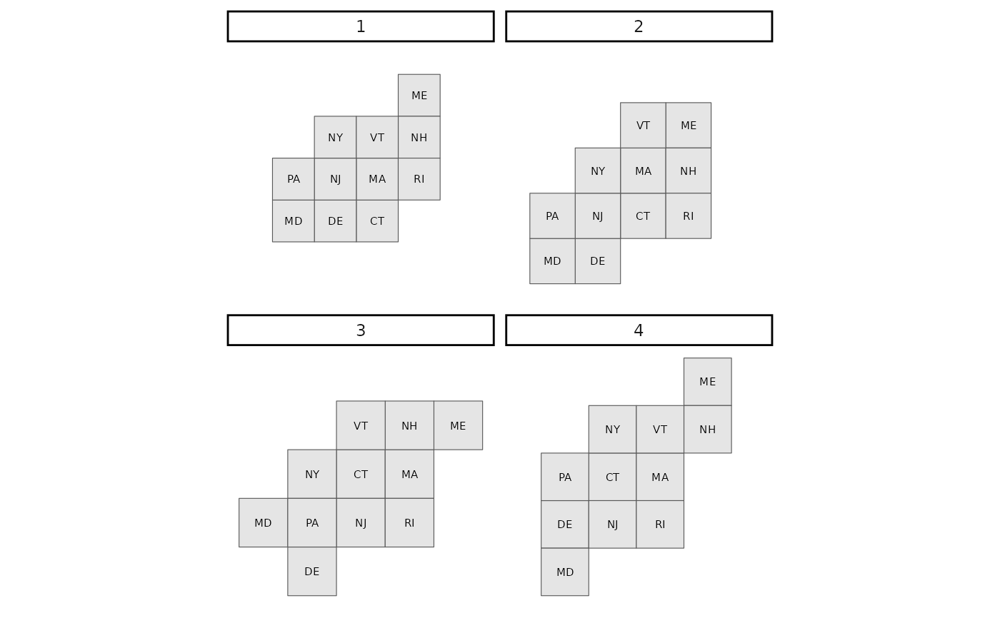

Plot many maps of a single area.
Usage
plot_many_maps(map_list, labels, size = 2)
Arguments
- map_list
A list of sfc_POLYGON objects, each containing
regions of a map to be plotted.
- labels
A character vector containing the labels for the regions of
the sfc_POLYGON objects.
- size
numeric. Controls size of labels in plot.
Value
Prints a plot with labels of the maps in the map_list
argument.
Details
Each element of the map_list argument must have the same number of
features, with the first feature of each element corresponding to the same
region, the second feature of each element corresponding to the same region,
etc. Region labels must be in the same order as the regions of each
sfc_POLYGON object.
Examples
library(sf)
northeast <- governors[c(6,7,17,18,19,27,28,30,36,37,43),]
ne_maps <- many_maps(northeast$geometry, northeast$abbreviation,
prop = 0, interpolate = 1, smoothness = c(0,20),
shift = list(c(0,0), c(0,0.5)), plot = FALSE)
plot_many_maps(ne_maps$map, northeast$abbreviation)
